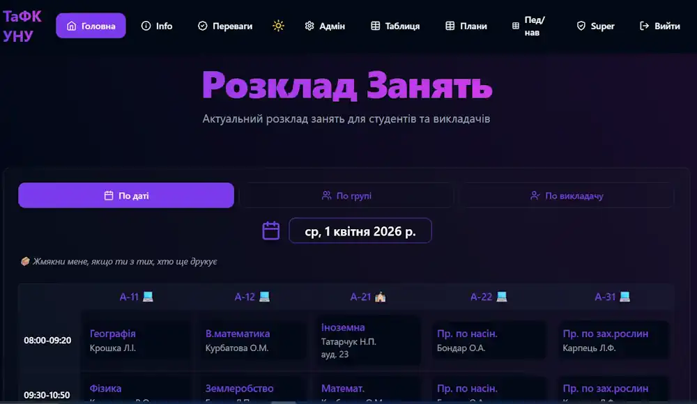
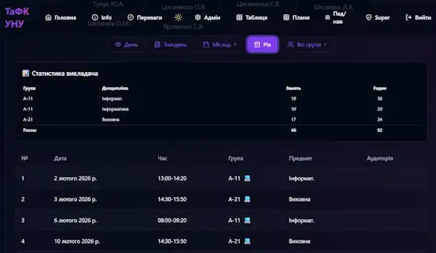
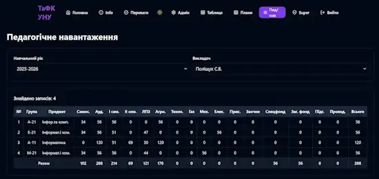

SchedPro • Пілотний проєкт
Автоматизація розкладу занять та навчального процесу для коледжів України
SchedPro • Пілотний проєкт
Система вже пройшла практичне тестування протягом 2025–2026 навчального року та використовується у реальному коледжі для роботи з розкладом, навчальними планами та педагогічним навантаженням. Зараз шукаю коледжі для пілотного впровадження та спільного розвитку платформи.
Що вже працює сьогодні
Електронний розклад занять
Перегляд розкладу за групою, викладачем або датою.
Перегляд розкладу за групою, викладачем або датою.
Персональний розклад викладача
Швидкий доступ до власних занять та навантаження.
Швидкий доступ до власних занять та навантаження.
Навчальні плани
Формування та облік навчальних планів через веб-інтерфейс.
Формування та облік навчальних планів через веб-інтерфейс.
Педагогічне навантаження
Розрахунок і контроль годин викладачів.
Розрахунок і контроль годин викладачів.
Доступ із будь-якого пристрою
Працює через браузер на комп'ютері та смартфоні.
Працює через браузер на комп'ютері та смартфоні.
✅ Система вже протестована в реальному коледжі
Протягом 2025–2026 навчального року платформа SchedPro
успішно використовувалася в
Тальянківському агротехнічному фаховому коледжі
Уманського національного університету.
🔗 Демонстраційний доступ:
takunu.schedpro.link
🔗 Демонстраційний доступ:
takunu.schedpro.link
Основні модулі системи
Розклад занять

Актуальний розклад для студентів і викладачів.
Навчальні плани

Централізоване ведення навчальної документації.
Педагогічне навантаження

Автоматизований облік годин викладачів.
🟢 Пілотний проєкт відкрито
Запрошую коледжі до безкоштовного тестування платформи
та збору зворотного зв'язку.
📱 Телефон / Viber / Telegram / WhatsApp
+38 (098) 655-85-54
+38 (098) 655-85-54
📘 Facebook
facebook.com/sergiy.polishchuk.ua
facebook.com/sergiy.polishchuk.ua